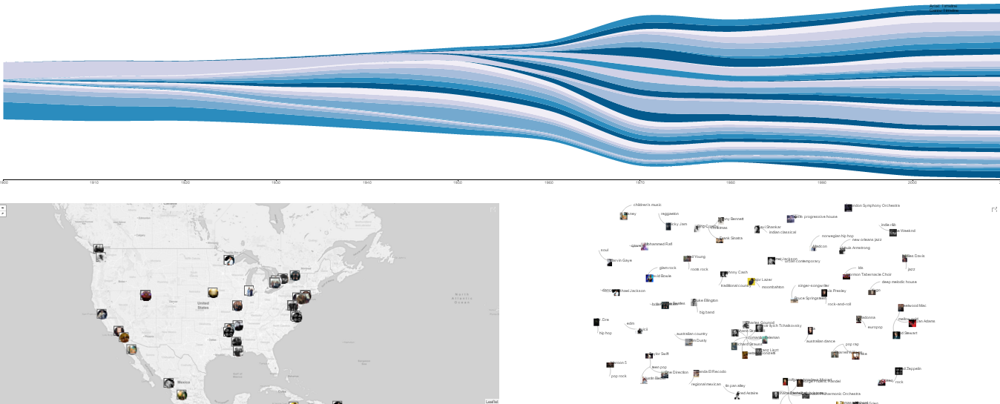
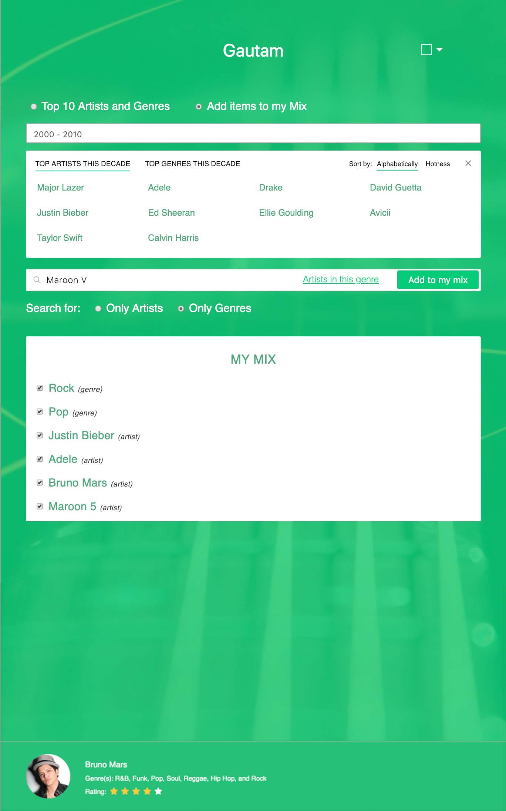

How to Use
Common Area:
- The common area contains the Map, Force Directed Graph (FDG) and the Timeline sections.
- 1. Map:
- a) The markers on the map represent where the artists are from.
- b) The markers on clicking, will open a pop up giving more information about the artist.
- c) The color code around the markers correspond to which of the two users added the arist to their mix.
- 2. Force Directed Graph (FDG):
- a) The nodes on the FDG represents artists. A link between two or more artists indicates that the artists are related by their genre or simply similar artists.
- b) The clusters seen on the FDG are artists belonging to same genres.
- c) The clusters as well as the individual nodes can be clicked and dragged to reposition, which facilitates easier comparision.
- 3. Timeline:
- a) The Timeline has two tabs: Artists and Genres.
- b) The genre timeline is a streamgraph that shows the popularity of the genre from year 1900 to date, and the thickness of the stream is a measure of the popularity of a particular genre.
- c) The artist timeline is also a streamgraph that shows the 'hottness' of the artist in their entire music career, and the thickness of a stream is a measure of the 'hottness' for the particular artist. The stream starts and ends according to the artist's career in music, this gives more insight into artists from different decades.

Top: Timeline shown via Steamgraph; Bottom-Left: Map with artists; Bottom-Right: Force Directed Graph
Panels:
- The two users get one panel each, with one at the left extreme and one at the right.
- 1. Each of the two individuals can pick from one of the 10 available colors they want and all their contribution to the shared space change to that color.
- 2. Users can type their name at the top of their panel for reference; This also helps in taking screenshots and saving for future.
- 3. Artist or genres can be added individually. If one cannot remember arists/genres right away, they can choose to see the top 10 by decade.
- 4. One can drill down further by searching for an artist, looking at their generes, and selecting one of those generes to view other artists in them.
- 5. Once an artist/genre selection has been made, the user can select to see results by genre or by artist.
- 6. Autocomplete suggestions are offered as one starts to type into the text box.
- 7. When an item is selected and "Add to my Mix" is clicked, the selected item gets added to the "My Mix" section below.
